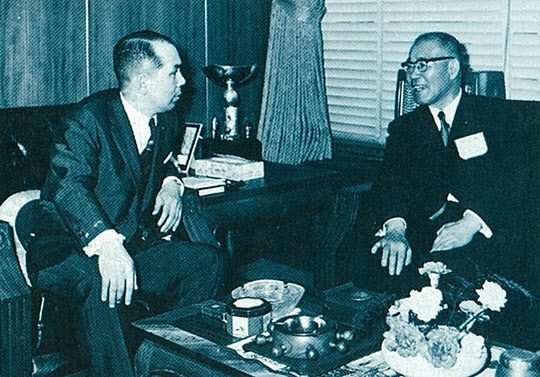
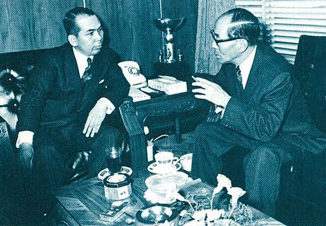

연재일 2014-12-11출처 조선일보 프리미엄조선 연재
대일청구권자금의 포철 전용에 대한 오원철의 회고도 짚어봐야 한다.
1928년에 태어난 오원철은 1957년 시발자동차 공장장을 지낸 경력이 보여주듯 엔지니어 출신으로 1961년 국가재건최고회의 기획조사위원회 조사과장을 맡아 박정희 정권과 인연을 맺었다. 1970년 상공부 차관을 거쳐 이듬해부터 대통령 경제2수석비서관이 되고 1974년부터는 중화학공업기획단장도 맡는다. 박정희 정권의 ‘우수한 테크노크라트’로 알려진 그는 1996년 『한국형 경제건설』이라는 회고록도 펴낸다.
2013년 9월 12일 《포스코신문》에 ‘오원철 인터뷰’가 실렸다. 오원철은 박충훈 부총리 일행과 함께 1969년 4월 파리 IECOK 회의를 마치고 귀국할 때 도쿄 어느 호텔에서 있었던 일이라며 ‘포항제철 건설과 대일청구권자금 전용 아이디어’에 대하여 다음과 같이 회고하고 있다.
<……도쿄에 도착하니 박태준 사장이 공항에 나와 있었다. 대표단으로부터 회의의 분위기를 전해들은 박태준 사장은 침울해 했다. 호텔로 가서 논의를 거듭하는 중에 대일청구권자금 전용을 요청하면 가능성이 있다는 이야기가 나왔다. 분위기가 이렇게 돌아가자 오 전 수석은 언뜻 떠오르는 것이 있었다.
“내가 나서서 무언가 해야겠다는 생각이 들더군.”
대일청구권자금을 사용한다는 것은 자금문제가 해결된다는 이상의 그 무엇이 있다고 생각했다. 일본의 설비와 기술까지 들여올 수 있다는 판단이 뇌리를 스쳤다. …… 그는 회의장을 빠져 나와 주일대사관 직원에게 부탁해 일본 통산성 철강국장에게 면회를 신청했다. 고토 국장은 쾌히 승낙하면서 통산성 사무실에서 만나자고 했다.
“……한국에서 성공하면 일본은 세계 시장을 노크할 수 있을 것이다.”
이렇게 설득해 들어갔다. 고토 국장은 한참 생각하다가 부하 직원들을 불러 이야기를 나누더니 결정을 내린 듯 “야리마소(해봅시다). 나는 윗선에 보고할 테니 당신도 한국정부에 보고하시오” 했다. 오 전 수석은 순간 전율을 느꼈다고 했다. …… 사실 이 대목은 한국의 종합제철 건설 역사에 일대 분수령이 되는 순간이었으며, 포항제철 건설사업이 성공으로 방향을 잡는 결정적인 계기가 되었다.
“나는 즉시 이 사실을 박충훈 부총리에게 보고했고, 다음날 아침 하네다 공항에서 박태준 사장에게도 이야기해 주었어요. 박 사장의 표정이 상당히 밝아지더군.”……>
위 인용과 거의 똑같은 내용이 사이트 ‘한국형경제모델 CEOI.org’에도 나와 있었다. 미세한 차이는 있다. 사이트에는 ‘박태준 사장’에게 파리 총회의 결과를 알려준 이가 ‘나(오원철)’인데, 《포스코신문》에는 ‘대표단’이라는 것.
오원철의 회고에서 좀 흥미로운 표현은, IECOK 총회에 참석했다가 일단 도쿄에 내린 한국 관료들이 챙겨온 소식을 박태준이 <나(오원철)>에게서 또는 <대표단>에게서 듣고는 ‘침울해’ 하더라는 것과 이튿날 아침 하네다 공항에서 대일청구권자금 전용에 대한 견해를 듣고는 ‘상당히 밝아지더군’이라는 것이다. 어떤 독자는 행간에서 묘한 낌새를 느낄 수도 있다. 무슨 즐겁지 못한 사연이 있었나, 이런 생각이 언뜻 스쳐가게도 한다.
1969년 IECOK 파리 총회는 정확히 4월 17일에서 18일까지 양일간 열렸다. 그때는 박태준이 그해 1월 31일 출국하여 피츠버그, 하와이, 도쿄를 거친 뒤 서울로 돌아와 청와대에서 박정희와 대일청구권자금 전용에 대한 의견을 나눈 날로부터 두 달쯤 지나는 무렵이었다.
그래서 하루 빨리 KISA와는 손을 털고 일본의 손을 잡아야 한다고 생각한 박태준은 4월 중순 다시 도쿄로 들어가 일본철강업계나 정계 지도급 인사들과 접촉하고 있었다. 파리에서 돌아온 관료들로부터 공항에서 ‘파장 소식’을 확인한 그는 오히려 속으로 ‘그거 참 듣던 중 반가운 소식’이라 여겼다.
그렇다면 오원철이 아주 오래된 기억들 중에 ‘박태준의 표정 변화에 대한 미세기억’에서는 약간의 착오를 일으켰던 것일까? 아니면 대통령과의 언약에 따라 함구 중이었던 박태준이 그렇게 표정 연기를 잘했던 것일까?

모든 인간의 기억에는 한계가 있지만, 그때 공항에서 만난 박태준의 얼굴에 스쳐간 두 가지 상반된 표정을 오원철은 소설가처럼 묘사했다. 과연 두 가지 미세기억은 오원철의 뇌리에 전광석화 찰나에 화석처럼 채집됨으로써 아무리 긴 세월이 흘러도 퇴색하지 않은 것일까? 아니면 그것을 세상의 햇볕 속으로 불러낸 찰나에 회고자의 어떤 감정이 묻은 것일까? 물론 전자의 경우일 수 있고, 또 그렇게 보아도 된다.
왜냐하면 박태준과 오원철은 ‘한국의 종합제철이나 포항종합제철 건설’과 관련하여 각자가 접촉한 인물들이나 활약한 영역이 크게 달랐기 때문이다.
예컨대, 1969년 4월 오원철이 양윤세의 말을 듣고(앞의 사이트에는 양윤세 투자진흥관이 대일청구권자금 전용을 말했다고 나옴) 즉각 일본 통산성 철강국장과 면담을 했다는 그즈음, 박태준은 일본내각 각료들이나 정계 지도자들이나 철강업계 대표들과 만나고 다녔다. 박태준이 일본철강업계 대표들과 만나고 다닌 이유는, 오원철이 테크노크라트로서 ‘뇌리’에 스쳤다고 회고한 바로 그 설비나 기술지원에 대해 적극적인 협력을 끌어내려는 것이었다.
일찍이 박철언이 매개한 야스오카를 비롯해 KISA 계획안에 대한 검토용역을 수행한 철강업체 대표와 관계자들, 도쿄대학 김철우 박사, 신격호 롯데 사장 등을 십분 활용하면서….
60년대에는 박태준과 오원철 간에 권력서열의 격차가 컸다는 사실도 기억해야 한다. 1961년에는 국가재건최고회의 ‘비서실장(또는 상공담당 최고위원)’과 ‘기획조사위원회 조사과장’이었고, 1969년 4월에도 오원철은 상공부 국장급(기획관리실장)이었기 때문에 대통령 박정희와 포항제철 사장 박태준(그는 가끔 대통령과 독대하고 있었다)이 둘이서 심각하게 나눈 대화를 알아차릴 만한 위치에 있지 않았다.
그때 박태준의 이른바 권력적 위상은, 몇 달 뒤(1969년 10월)부터 비서실장을 맡게 되는 김정렴도 증언했다시피, 박정희가 허용하는 ‘독대’라는 만남의 형식이 상징적으로 극명히 보여준다. 박태준은 대통령과 언약한 일을 공식화하기에 앞서 오원철, 양윤세 등 관료나 제3자에게 밝힐 까닭이 없었고, 그렇게 입이 가벼웠으면 박정희의 신임이 두터워질 수도 없었을 것이다.

다만,
오원철은 박태준의 고유한 영역에서 어떤 일들이 전개되고 있었던가를 자세히 알지 못했을 뿐이다.
이것은 그의 잘못이 아니다.
그래서 오원철의 회고는 대일청구권자금 전용 아이디어가 ‘양윤세와 오원철의 것’이라고 말할 수도 있을 것이다. 1966년
11월부터 관료들이 주도해온 ‘관료들의
KISA’가 해체되는 쪽으로 완전히 기울어진
1969년
4월 중순,
오원철은 몰랐으나 벌써부터 박정희와 박태준은 ‘대일청구권자금 전용’이라는 최후 비장의 카드를 거머쥐고 있었다.
그것은 오원철이 평가한 그대로 ‘한국의 종합제철 건설 역사에 일대 분수령이 되는 순간이었으며 포항제철 건설사업이 성공으로 방향을 잡는 결정적인 계기가 되었다.’ 물론 그때 두 관료가 도쿄에서 다루었던 동일한 아이디어도 큰 맥락에서 보면 분위기나 대세를 만드는 데 톡톡히 일조를 했을 것이다.
그렇게 포항종합제철은 국가적 중대 사업이어서 그만큼 국가적 역량이 총체적으로 투입되어야 했다.
1969년
4월로부터도
10년쯤 더 지난
1978년,
박태준은 오원철과 대립하게 된다.
사안은 ‘제2제철소 실수요자 선정’이다.
경제2수석(중화학공업기획단장)
오원철이 청와대 안에서 ‘정주영의 현대’를 강력히 지지하지만,
박정희는 ‘박태준의 포철’을 선택한다.
정주영-오원철,
박태준-최각규(상공부 장관).
이렇게 짝을 지은 것처럼 전개되는 ‘제2제철소 실수요자 경쟁’에 관한 이야기는 나중에 다룬다.